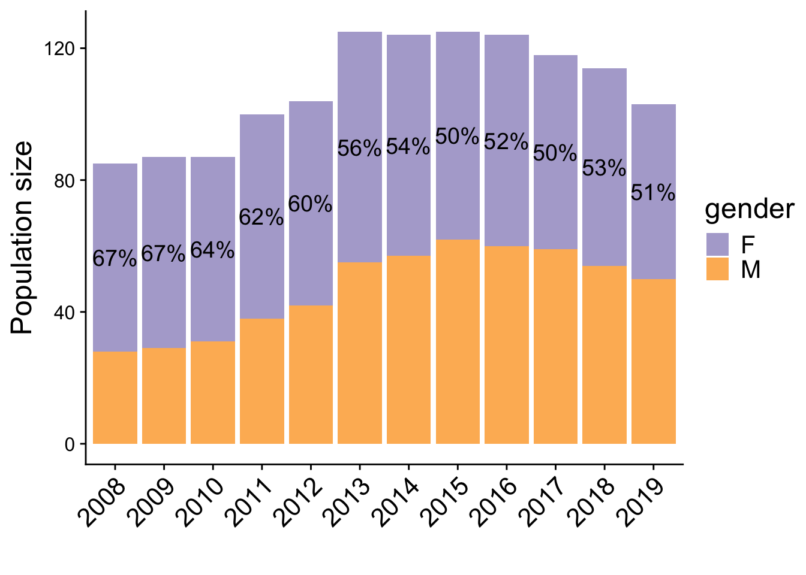
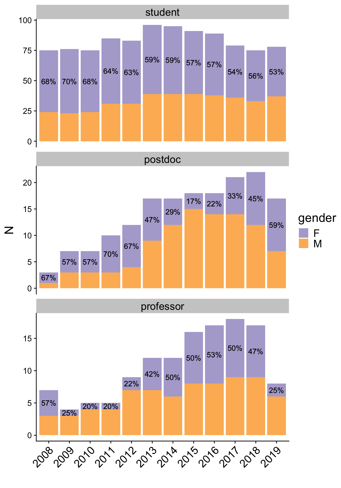
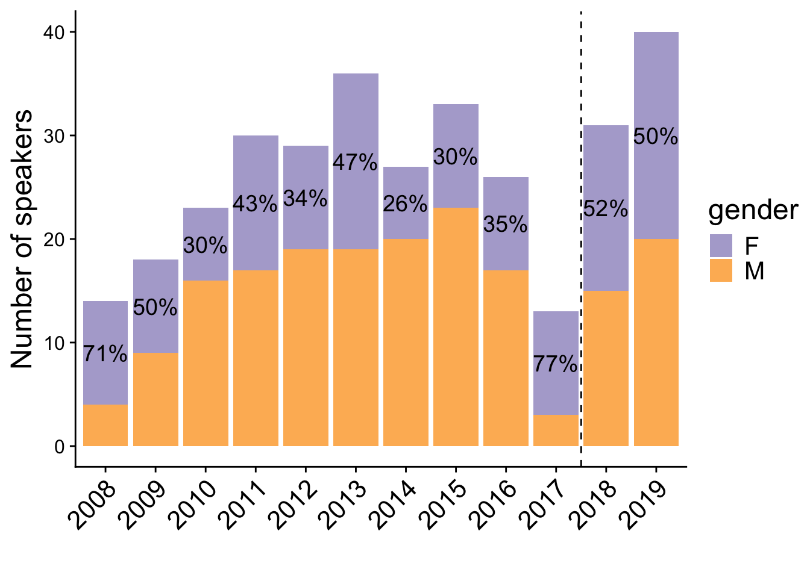
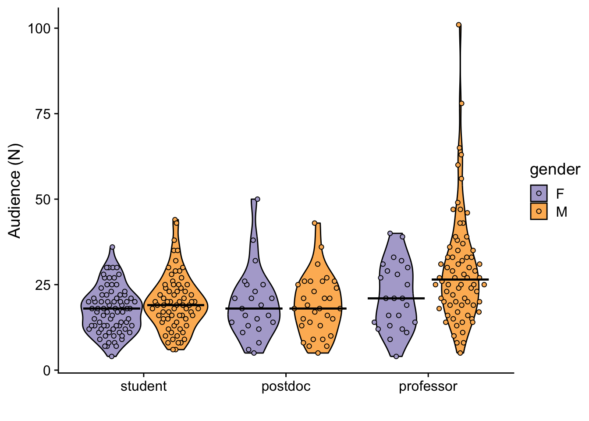
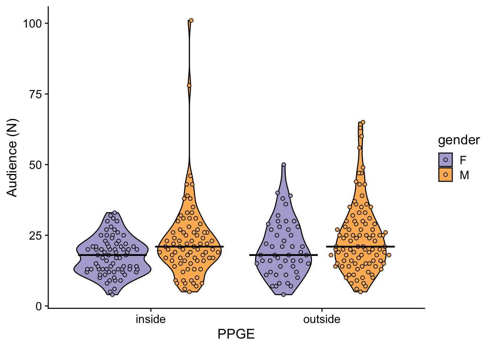
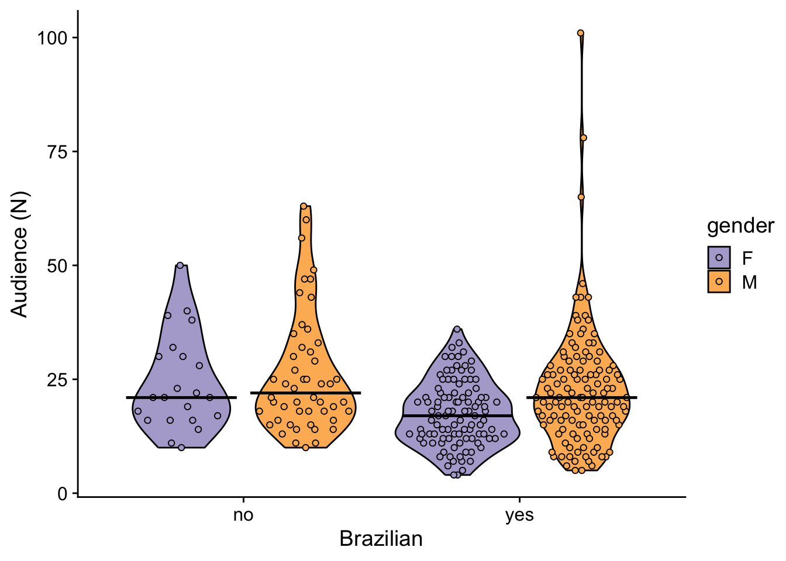

EcoEncontros seminar series data
Melina Leite & Júlia Barreto
30 de Junho de 2024
Last updated: 2024-06-30
Checks: 7 0
Knit directory:
genderBias_EcoEncontros_website/
This reproducible R Markdown analysis was created with workflowr (version 1.7.1). The Checks tab describes the reproducibility checks that were applied when the results were created. The Past versions tab lists the development history.
Great! Since the R Markdown file has been committed to the Git repository, you know the exact version of the code that produced these results.
Great job! The global environment was empty. Objects defined in the global environment can affect the analysis in your R Markdown file in unknown ways. For reproduciblity it’s best to always run the code in an empty environment.
The command set.seed(20240630) was run prior to running
the code in the R Markdown file. Setting a seed ensures that any results
that rely on randomness, e.g. subsampling or permutations, are
reproducible.
Great job! Recording the operating system, R version, and package versions is critical for reproducibility.
Nice! There were no cached chunks for this analysis, so you can be confident that you successfully produced the results during this run.
Great job! Using relative paths to the files within your workflowr project makes it easier to run your code on other machines.
Great! You are using Git for version control. Tracking code development and connecting the code version to the results is critical for reproducibility.
The results in this page were generated with repository version 9aaac61. See the Past versions tab to see a history of the changes made to the R Markdown and HTML files.
Note that you need to be careful to ensure that all relevant files for
the analysis have been committed to Git prior to generating the results
(you can use wflow_publish or
wflow_git_commit). workflowr only checks the R Markdown
file, but you know if there are other scripts or data files that it
depends on. Below is the status of the Git repository when the results
were generated:
Ignored files:
Ignored: .DS_Store
Ignored: .Rhistory
Ignored: .Rproj.user/
Ignored: .github/.DS_Store
Ignored: output/.DS_Store
Note that any generated files, e.g. HTML, png, CSS, etc., are not included in this status report because it is ok for generated content to have uncommitted changes.
These are the previous versions of the repository in which changes were
made to the R Markdown (analysis/0_data_summary.Rmd) and
HTML (docs/0_data_summary.html) files. If you’ve configured
a remote Git repository (see ?wflow_git_remote), click on
the hyperlinks in the table below to view the files as they were in that
past version.
| File | Version | Author | Date | Message |
|---|---|---|---|---|
| Rmd | 67d23e5 | melina-leite | 2024-06-30 | test |
| html | 67d23e5 | melina-leite | 2024-06-30 | test |
EcoEncontros Seminar
Talks from EcoEncontros Seminar series at the Graduate Program of Ecology in the University of São Paulo (PPGE-USP), Brazil
See file metadata.txt, in folder data for
more description and detail of the dataset.
Reading and summarising data:
data1 <- read.table("data/presentations_PPGE_2008-2019.csv", sep=",",
header=T, as.is=T)
data1$date <- dmy(data1$date)
data1$year <- year(data1$date)
skimr::skim(data1)| Name | data1 |
| Number of rows | 344 |
| Number of columns | 31 |
| _______________________ | |
| Column type frequency: | |
| character | 15 |
| Date | 1 |
| numeric | 15 |
| ________________________ | |
| Group variables | None |
Variable type: character
| skim_variable | n_missing | complete_rate | min | max | empty | n_unique | whitespace |
|---|---|---|---|---|---|---|---|
| gender | 2 | 0.99 | 1 | 1 | 0 | 2 | 0 |
| title_original | 7 | 0.98 | 11 | 218 | 0 | 329 | 0 |
| title_language | 7 | 0.98 | 2 | 4 | 0 | 3 | 0 |
| title_english | 13 | 0.96 | 11 | 201 | 0 | 325 | 0 |
| abstract_original | 104 | 0.70 | 302 | 3078 | 0 | 236 | 0 |
| abstract_language | 104 | 0.70 | 2 | 4 | 0 | 3 | 0 |
| abstract_english | 104 | 0.70 | 303 | 3566 | 0 | 236 | 0 |
| department | 10 | 0.97 | 1 | 11 | 0 | 7 | 0 |
| institute | 6 | 0.98 | 0 | 47 | 1 | 15 | 0 |
| university | 4 | 0.99 | 3 | 47 | 0 | 96 | 0 |
| country | 2 | 0.99 | 3 | 13 | 0 | 23 | 0 |
| position | 6 | 0.98 | 6 | 17 | 0 | 7 | 0 |
| position_cat | 6 | 0.98 | 6 | 9 | 0 | 4 | 0 |
| origin | 2 | 0.99 | 2 | 11 | 0 | 6 | 0 |
| obs | 0 | 1.00 | 0 | 62 | 331 | 7 | 0 |
Variable type: Date
| skim_variable | n_missing | complete_rate | min | max | median | n_unique |
|---|---|---|---|---|---|---|
| date | 0 | 1 | 2008-04-29 | 2019-12-12 | 2014-09-21 | 319 |
Variable type: numeric
| skim_variable | n_missing | complete_rate | mean | sd | p0 | p25 | p50 | p75 | p100 | hist |
|---|---|---|---|---|---|---|---|---|---|---|
| id | 0 | 1.00 | 165.09 | 91.60 | 1.0 | 86.75 | 171.50 | 241.25 | 320 | ▆▆▆▇▇ |
| code_speaker | 0 | 1.00 | 145.98 | 86.47 | 1.0 | 69.75 | 145.50 | 223.00 | 292 | ▇▇▆▇▇ |
| audience_n | 0 | 1.00 | 21.68 | 11.85 | 4.0 | 14.00 | 20.00 | 27.00 | 101 | ▇▃▁▁▁ |
| audience_female | 3 | 0.99 | 12.01 | 7.00 | 2.0 | 7.00 | 11.00 | 15.00 | 57 | ▇▃▁▁▁ |
| audience_male | 3 | 0.99 | 9.54 | 5.62 | 0.0 | 6.00 | 9.00 | 12.00 | 46 | ▇▅▁▁▁ |
| audience_NA | 3 | 0.99 | 0.05 | 0.30 | 0.0 | 0.00 | 0.00 | 0.00 | 4 | ▇▁▁▁▁ |
| total_citation_n | 254 | 0.26 | 5468.91 | 6014.07 | 40.0 | 1313.75 | 3387.00 | 7170.00 | 34832 | ▇▂▁▁▁ |
| h_index | 254 | 0.26 | 31.37 | 17.33 | 2.0 | 19.00 | 28.50 | 41.00 | 90 | ▆▇▃▂▁ |
| i10_index | 254 | 0.26 | 62.14 | 46.80 | 1.0 | 28.25 | 55.00 | 78.75 | 265 | ▇▆▂▁▁ |
| most_cited_n | 254 | 0.26 | 363.54 | 476.59 | 12.0 | 93.75 | 187.50 | 461.25 | 3152 | ▇▁▁▁▁ |
| citation_cum | 254 | 0.26 | 2169.32 | 2800.19 | 17.0 | 304.50 | 971.50 | 2709.50 | 12466 | ▇▂▁▁▁ |
| years_career | 254 | 0.26 | 12.30 | 5.62 | 2.0 | 8.00 | 12.00 | 16.00 | 27 | ▆▇▇▃▂ |
| nature_index_count | 250 | 0.27 | 277.35 | 291.72 | 1.0 | 77.50 | 282.00 | 282.00 | 1699 | ▇▁▁▁▁ |
| nature_index_share | 250 | 0.27 | 71.19 | 117.56 | 0.1 | 13.25 | 53.64 | 53.64 | 763 | ▇▁▁▁▁ |
| year | 0 | 1.00 | 2014.10 | 3.27 | 2008.0 | 2012.00 | 2014.00 | 2017.00 | 2019 | ▅▆▆▆▇ |
For ALL analyses: Excluding special events as round tables and discussions not related to a project or study presented by someone.
IDs <- c(90, 154, 170, 211, 212, 230, 244, 250, 289, 319)
data_all <- data1 %>% filter(!id %in% IDs)Including varible to indicated the affirmative actions period:
data_all$affirm_action <- ifelse(data_all$year<2018,"before", "after")
data_all$affirm_action <- fct_relevel(data_all$affirm_action,"before", "after")There were 256 seminars before and 71 after the affirmative actions.
Population data from the Graduate Programm PPGE-USP
Data from 2008-2019.
Number of students, post-docs and professors in the PPGE-USP per gender and year.
pop <- read.table("data/pop_PPGE_2008-2019.csv", sep=",",
header=T, as.is=T)
pop2 <- pop %>%
pivot_longer(2:7, names_to=c("category","gender"), values_to="N",
names_sep = "_") %>%
pivot_wider(names_from = "gender", values_from="N") %>%
mutate(propFtotal = total_F/(total_F+total_M),
ratioFtotal = total_F/total_M,
propFcat = F/(F+M),
ratioFcat = F/M) %>%
dplyr::select(year, category, total_F, total_M, propFtotal,
ratioFtotal,F,M, propFcat, ratioFcat)Over all years
pop2 %>% group_by(category) %>% summarise(F=sum(F), M=sum(M),
prop.F = sum(F)/(sum(M)+ sum(F))) %>%
kable(digits=2)| category | F | M | prop.F |
|---|---|---|---|
| postdoc | 72 | 97 | 0.43 |
| professor | 56 | 74 | 0.43 |
| student | 603 | 394 | 0.60 |
Average over all years
pop2 %>% group_by(category) %>% summarise(mean.propF=mean(propFcat),
sd.propF = sd(propFcat)) %>%
kable(digits=2)| category | mean.propF | sd.propF |
|---|---|---|
| postdoc | 0.48 | 0.18 |
| professor | 0.38 | 0.15 |
| student | 0.61 | 0.06 |
PPGE-USP population by gender:

| Version | Author | Date |
|---|---|---|
| 67d23e5 | melina-leite | 2024-06-30 |
PPGE-USP population size by gender and position and year

| Version | Author | Date |
|---|---|---|
| 67d23e5 | melina-leite | 2024-06-30 |
Data description
Descriptive totals: From 344 talks in 12 years, we used 327 as we excluded special seminars and round tables.
In total, 56% of the talks were given by men (n=184) and 44% by women (n=143).
dim(data_all)[1] 327 32data_all %>% tabyl(gender) %>% kable()| gender | n | percent |
|---|---|---|
| F | 143 | 0.4373089 |
| M | 184 | 0.5626911 |
Speakers data
Proportion and number of male and female speakers per academic position.
data_p <- data_all %>% filter(position_cat != "others")
data_p$position_cat <- fct_relevel(data_p$position_cat, "student",
"postdoc","professor")Excluding talks from non-academic professionals. N = 320.
| position_cat | F | M |
|---|---|---|
| student | 53% (89) | 47% (78) |
| postdoc | 44% (25) | 56% (32) |
| professor | 25% (24) | 75% (72) |

| Version | Author | Date |
|---|---|---|
| 67d23e5 | melina-leite | 2024-06-30 |
Variation in time.

| Version | Author | Date |
|---|---|---|
| 67d23e5 | melina-leite | 2024-06-30 |
Origin of the speakers
There were 136 (42%) talks given by people from the PPGE population.
Including talks from the Institute of Biosciences, USP, there were 173 (54%).
Comparing proportions of female speakers in the seminar and in the PPGE population by position.
Relationship between the proportion of females in the PPGE population in each category of academic position in each year (x axis) and the proportion of female speakers in the same category and year. Horizontal and vertical gray dashed lines are the 50% of each proportion and diagonal black dashed line indicates where the propotions are similar.
| Version | Author | Date |
|---|---|---|
| 67d23e5 | melina-leite | 2024-06-30 |
Audience data
Excluding talks from non-academic professionals.
Excluding seminars with more than one speaker:
events <- data_p %>% count(id) %>% filter(n>1)
data_a <- data_p %>% filter(!id %in% events$id,
!is.na(audience_n))There were 298 talks with information about the number of attendees.
data_a %>% group_by(position_cat,gender) %>% summarise(N=n(),
min=min(audience_n),
mean=mean(audience_n),
sd = sd(audience_n),
median=median(audience_n),
max=max(audience_n)) %>%
kable(digits=2)| position_cat | gender | N | min | mean | sd | median | max |
|---|---|---|---|---|---|---|---|
| student | F | 77 | 4 | 17.58 | 6.69 | 18.0 | 36 |
| student | M | 70 | 6 | 19.83 | 8.20 | 19.0 | 44 |
| postdoc | F | 23 | 5 | 19.52 | 10.34 | 18.0 | 50 |
| postdoc | M | 32 | 5 | 18.97 | 8.78 | 18.0 | 43 |
| professor | F | 24 | 4 | 21.54 | 9.78 | 21.0 | 40 |
| professor | M | 72 | 5 | 29.51 | 16.46 | 26.5 | 101 |

| Version | Author | Date |
|---|---|---|
| 67d23e5 | melina-leite | 2024-06-30 |
Looking for possible influence of the speakers origin (inside and outside PPGE) in the audience.
data_a$ppge <- ifelse(data_a$origin == "IB", "inside", "outside")
table(data_a$gender,data_a$ppge)
inside outside
F 75 49
M 79 95
| Version | Author | Date |
|---|---|---|
| 67d23e5 | melina-leite | 2024-06-30 |
Looking for possible influence of the speaker origing (Brazil or abroad).
data_a$brazilian <- ifelse(data_a$country == "Brasil", "yes", "no")
table(data_a$gender,data_a$brazilian)
no yes
F 22 102
M 50 124
| Version | Author | Date |
|---|---|---|
| 67d23e5 | melina-leite | 2024-06-30 |
Text analysis data
Excluding talks without title
data_t <- data_all %>% filter(!is.na(title_english))There were 320 talks with title information.
Saving processed data
PPGE population data
save(pop2, file="output/data_pop_ppge.Rdata")Data for the proportion of female speakers
save(data_p, file="output/data_proportion.Rdata")Data for the audience of the talks
save(data_a, file="output/data_audience.Rdata")Data for the text analysis
save(data_t, file="output/data_title.Rdata")
sessionInfo()R version 4.3.1 (2023-06-16)
Platform: aarch64-apple-darwin20 (64-bit)
Running under: macOS Sonoma 14.5
Matrix products: default
BLAS: /Library/Frameworks/R.framework/Versions/4.3-arm64/Resources/lib/libRblas.0.dylib
LAPACK: /Library/Frameworks/R.framework/Versions/4.3-arm64/Resources/lib/libRlapack.dylib; LAPACK version 3.11.0
locale:
[1] pt_BR.UTF-8/pt_BR.UTF-8/pt_BR.UTF-8/C/pt_BR.UTF-8/pt_BR.UTF-8
time zone: America/Sao_Paulo
tzcode source: internal
attached base packages:
[1] stats graphics grDevices utils datasets methods base
other attached packages:
[1] ggbeeswarm_0.7.2 janitor_2.2.0 patchwork_1.2.0 cowplot_1.1.3 lubridate_1.9.3
[6] forcats_1.0.0 stringr_1.5.1 dplyr_1.1.4 purrr_1.0.2 readr_2.1.5
[11] tidyr_1.3.1 tibble_3.2.1 ggplot2_3.5.1 tidyverse_2.0.0 knitr_1.45
[16] workflowr_1.7.1
loaded via a namespace (and not attached):
[1] beeswarm_0.4.0 gtable_0.3.5 xfun_0.42 bslib_0.7.0
[5] processx_3.8.4 callr_3.7.6 tzdb_0.4.0 vctrs_0.6.5
[9] tools_4.3.1 ps_1.7.6 generics_0.1.3 fansi_1.0.6
[13] highr_0.10 pkgconfig_2.0.3 skimr_2.1.5 lifecycle_1.0.4
[17] compiler_4.3.1 farver_2.1.2 git2r_0.33.0 munsell_0.5.1
[21] repr_1.1.7 getPass_0.2-4 snakecase_0.11.1 vipor_0.4.7
[25] httpuv_1.6.15 htmltools_0.5.8.1 sass_0.4.9 yaml_2.3.8
[29] later_1.3.2 pillar_1.9.0 jquerylib_0.1.4 whisker_0.4.1
[33] cachem_1.1.0 tidyselect_1.2.1 digest_0.6.35 stringi_1.8.4
[37] labeling_0.4.3 rprojroot_2.0.4 fastmap_1.2.0 grid_4.3.1
[41] colorspace_2.1-0 cli_3.6.2 magrittr_2.0.3 base64enc_0.1-3
[45] utf8_1.2.4 withr_3.0.0 scales_1.3.0 promises_1.3.0
[49] timechange_0.3.0 rmarkdown_2.27 httr_1.4.7 hms_1.1.3
[53] evaluate_0.23 rlang_1.1.4 Rcpp_1.0.12 glue_1.7.0
[57] rstudioapi_0.16.0 jsonlite_1.8.8 R6_2.5.1 fs_1.6.4